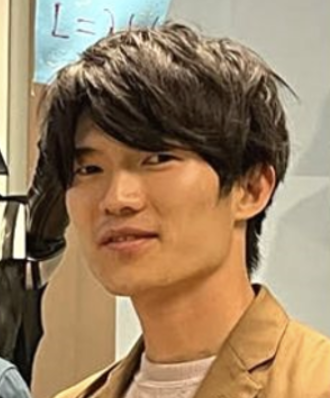
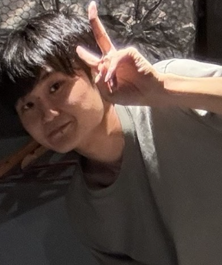

Research Team
研究体制
Research Team
本プロジェクトは、プロジェクトリーダーのもと、3つのワーキンググループ（WG1〜WG3）が相互に連携しながら研究を推進しています。 また、国立環境研究所気候変動適応センターやネイチャーポジティブ那須野が原アライアンスなどとも連携しています。
This project is led by the Project Leader with three working groups (WG1–WG3) collaborating with each other. Also, we collaborate with the Center for Climate Change Adaptation at the National Institute for Environmental Studies and the Nature Positive Nasunogahara Alliance, etc.
プロジェクトリーダー
Project Leader

Project Leader
Takuya Nakashima
The University of Tokyo
分野横断モデリング
Integrated System Modeling
Takahiro Oyama
National Institute for Environmental Studies

Shinta Ashino
The University of Tokyo
Manabu Watanabe
Blue&Tech (Advisor)
参加型ワークショップ・意思決定支援
Serious-Game & Workshop
Ryota Wada
The University of Tokyo
Kenya Suzuki
The University of Tokyo
Motoyasu Kanazawa
The University of Tokyo
Masayoshi Ito
The University of Tokyo
協調メカニズムデザイン
Collaborative Mechanism Design
Nariaki Nishino
The University of Tokyo
Sinndy Dayana Rico Lugo
Ritsumeikan Asia Pacific University
Ayato Kitadai
The University of Tokyo
Tingyan Zhang
The University of Tokyo
Xing Fan
The University of Tokyo